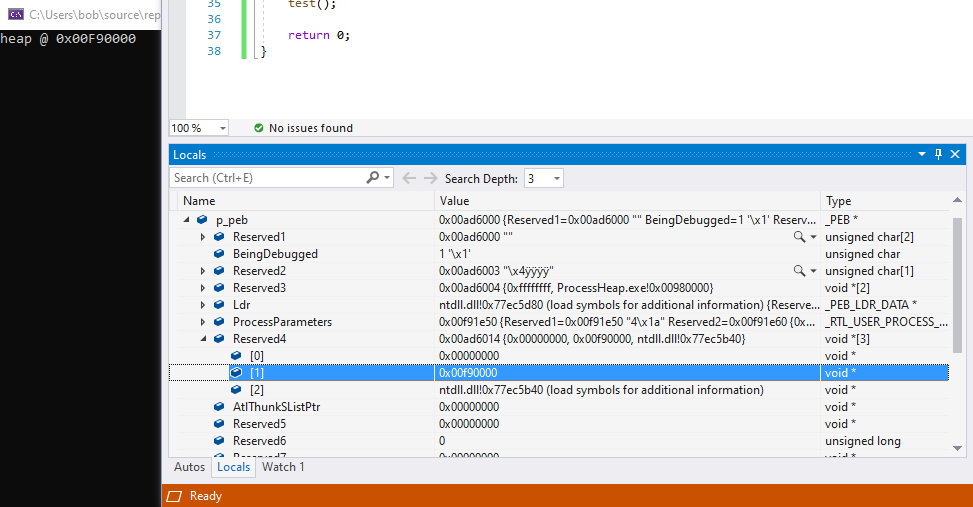

# PEB->ProcessHeap
•
https://www.aldeid.com/wiki/PEB-Process-Environment-Block/ProcessHeapPEB->ProcessHeap points to the start of the process' heap.
The first heap contains a header with the fields:
•
ForceFlags•
FlagsThese fields are used to tell the kernel whether the heap was created within a debugger.
• If the value of
ForceFlags != 0, then the process in being debugged
• If the
Flags field does not have the set
HEAP_GROWABLE (0x00000002) flag, then the process is being debugged.
## Ways to get the start of the process heap
•
GetProcessHeap() ◇ reads directory from PEB->ProcessHeap
•
GetProcessHeaps() ◇ calls
RtlGetProcessHeaps() - returns an array of the process heaps
• asm
If you're looking in Visual Studio at the PEB struct,
Reserved4[1] is the
ProcessHeap value.
Found by cross examining x64dbg's documentation of the PEB struct with MSDN and also using
GetProcessHeap to verify:
•
https://github.com/x64dbg/x64dbg/blob/development/src/dbg/ntdll/ntdll.h•
https://docs.microsoft.com/en-us/windows/win32/api/winternl/ns-winternl-peb•
https://docs.microsoft.com/en-us/windows/win32/api/heapapi/nf-heapapi-getprocessheap## Code
COULDN'T GET THIS ONE TO WORK :/
flag always seemed to return
2 -
HEAP_GROWABLEand
ForceFlags was a random value
#include <stdio.h>
#include <Windows.h>
/*
Pretty sure this is wrong.
Flags is the right value,
but I don't think ForceFlags is.
*/
BOOL DebugCheck_ProcessHeap(void)
{
BOOL debugger_present = FALSE;
HANDLE h_heap = NULL;
PDWORD heap_ForceFlags = 0;
PDWORD heap_Flags = 0;
// get start of heap
h_heap = GetProcessHeap();
// calculate pointers to heap flags from start of heap
#ifdef _WIN64
heap_ForceFlags = (PDWORD)((PBYTE)h_heap + 0x18); // 64bit
heap_Flags = (PDWORD)((PBYTE)h_heap + 0x14); // 64bit
#else
heap_ForceFlags = (PDWORD)((PBYTE)h_heap + 0x10); // 32bit
heap_Flags = (PDWORD)((PBYTE)h_heap + 0x0c); // 32bit
#endif
printf("heap @ 0x%p \n", h_heap);
printf("\t ForceFlags: %d \n", *heap_ForceFlags);
printf("\t Flags: %d \n", *heap_Flags);
// if ForceFlags != 0 - there's a debuuger
// if Flags does not have HEAP_GROWABLE set - there's a debugger
if (*heap_ForceFlags != 0 || *heap_Flags != HEAP_GROWABLE)
debugger_present = TRUE;
return debugger_present;
}
int main(void)
{
BOOL debugger_present = FALSE;
debugger_present = DebugCheck_ProcessHeap();
if (debugger_present == TRUE)
return 1;
printf("hey :) \n");
return 0;
}